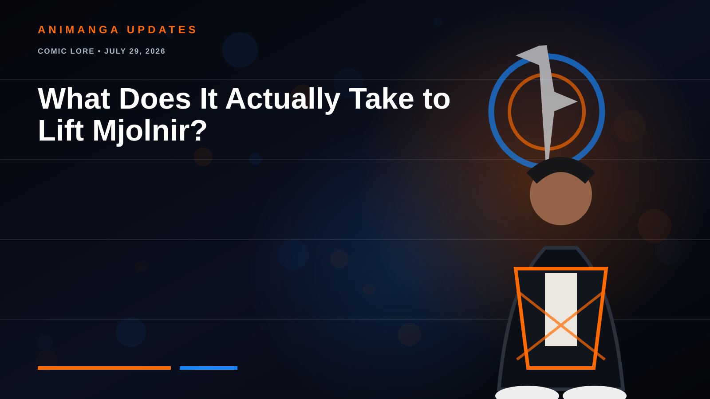

COMIC LORE • JULY 29, 2026
What Does It Actually Take to Lift Mjolnir?
Strength is almost irrelevant. The hammer is judging the person holding it.

Odin’s enchantment grants Thor’s power to whoever is deemed worthy. Across comics and films, worthiness usually points toward courage, humility, self-sacrifice, integrity and willingness to protect others.
There is also a warrior’s burden. A worthy wielder must act decisively without craving domination. Pure intentions may not be enough; responsibility and readiness to bear power’s consequences matter too.
Why the rules stay mysterious
Mjolnir’s standard changes with stories, circumstances and sometimes Odin’s magic. That uncertainty is the point. The hammer is not a gym test—it is a character test.
“Worthiness” is intentionally interpretive and varies across Marvel continuities.
← Old Man Otaku